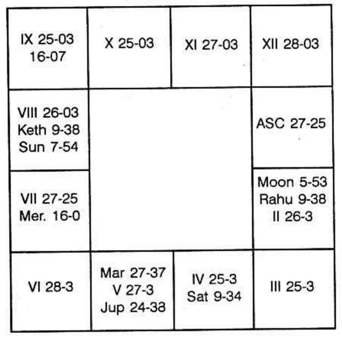

Time of birth was 5-45 P.M. on 20th February, 1924 at 8°11′ North and 77°29′ East. The horoscope is as follows:-

Ketu Dasa balance at the time of birth is exactly 4 years.
Sir, The Query is to find out whether your seniority will be restored, if so when? Or will you resign and leave the job, if so when?
To regain one’s position, one has to judge the house 10 and 11, as 10th house indicates the position, fame, reputation and honour in profession and also the 11th shows one’s realisation of ambition. Both the houses are vacant. The lords of the cusps of the 10th and 11th are ruled by Mars and Venus. It will be surprising for you to note that I am taking your horoscope at a time when Bharani Nakshatra is on. It means Moon is transiting in Mars, sign and Venus star. Therefore the two planets which are to fulfil your desire will be Mars and Venus. The other planet which will also contribute for your success will be the lord of the day and the lord of the lagna in which I am now dictating. Now the lagna is Kataka, ruled by Moon and the day is also ruled by Moon, being Monday. Therefore, one can boldly declare that you will have your desire fulfilled. You are running Mars Dasa, Ketu Bhukti upto 14th January, 1969. Mars Dasa, Venus Bhukti commences on the happy Pongal day of the Hindus. Moon sub period in Venus will be in April-May, 1969. I am sure that the day of order for regaining the lost position would be 3rd May, 1969, when Sun transits in Bharani Nakshatra.
According to this horoscope, there is no planet in Mars star, no planet in Venus star. Therefore, Mars and Venus are the two, who in their conjoined period, will do good. No node is conjoined with either of the two or occupying any of the four signs owned by those two planets. Therefore, it must come through and you must regain as the sub lords are favourable.
Regarding the 2nd question, one has to find out when you will be running the period of the significators of the houses 1, 5 and 9. Moon and Rahu are in 1. Mars alone is in 5 and no planet is in 9. The lord of the 9th is Jupiter. Budha is in Moon’s constellation. Sani and Ketu are also in Rahu’s star. Guru’s star is not occupied by any planet and Mars star is also not tenanted by any.
Taking the ruling planet at the moment of judgment as lagna is in 2° of Cancer, you will retire from the service after the full term during Rahu Dasa, Budha Bukthi, Ketu Anthra, i.e. in 1979. Hence the question of resigning the present post during Mars Dasa or in the first half of Rahu Dasa is out of question.